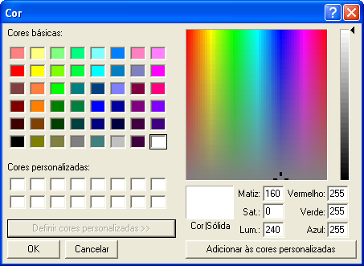

| Menu
Editar |
|
Cor
de Fundo
Essa operação
permite ao usuário definir a cor de fundo dos
gráficos de R_DAT.
Todos os 5
gráficos serão afetados.
Clique no menu “Editar ► Cor
de fundo” ou no botão na
Barra de Ferramentas e escolha a opção ”Cor
de fundo”.
Será aberta uma
janela de escolha/edição de cores da palheta
do Windows. Selecione uma cor e clique “OK”.

A definição
será lembrada pelo R_DAT nas sessões
subsequentes.
| |
Tipos
de linhas |
Definição de
cor |
|